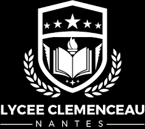
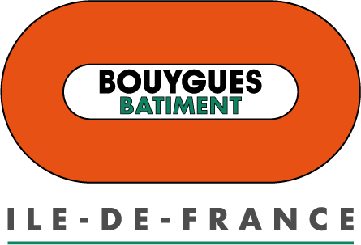

Resume
← BackEducation
-
 2023 – 2025
2023 – 2025
Engineering Degree – ENSAE Paris (IP Paris)
Specialization: Data Science, Statistics and Learning.
Palaiseau, France -
 2021 – 2025
2021 – 2025
Engineering Degree – École Centrale Méditerranée
Marseille, France -

2019 – 2021
Preparatory Classes (MPSI/MP) – Lycée Georges Clemenceau
Intensive Math, Physics, Computer Science courses for French engineering school entrance exams.
Nantes, France
Professional Experience
-

Oct. 2024 – Oct. 2025
Data & AI Apprentice – Bouygues Bâtiment France
Development of an automated tool for version comparison of tender documents using LLMs (prompt engineering, reasoning, multi-agent models, LLM-as-a-judge).
Guyancourt, France -
 June 2024 – Sept. 2024
June 2024 – Sept. 2024
Research Assistant Intern – Aix-Marseille School of Economics
Generation of financial time series using diffusion models. Evaluation of signal realism (volatility, autocorrelation).
Marseille, France -
 Feb. 2023 – July 2023
Feb. 2023 – July 2023
Visiting Research Intern – KAUST
Developed learning algorithms combining accuracy, robustness, and privacy:
• Sparse truthful linear regression (submitted to NeurIPS)
• Robust and private bandits under α-contamination
Thuwal, Saudi Arabia
Academic Projects
-
Feb. 2025 – April 2025
Data Science Projects to Production
Deploying a data science pipeline using Streamlit and Docker. -
Feb. 2025 – April 2025
Natural Language Processing
Built a semantic classifier to distinguish between LLM-generated and human-written text. -
Feb. 2025 – April 2025
Advanced ML
Worked on a custom Adam optimizer variant and tested on MNIST. -
Oct. 2024 – Jan. 2025
Bayesian Statistics
Implemented Bayesian model-based time series clustering via MCMC and mixture models. -
Feb. 2024 – May. 2024
Linear Time Series
ARIMA modeling of economic time series using Box-Jenkins methodology.